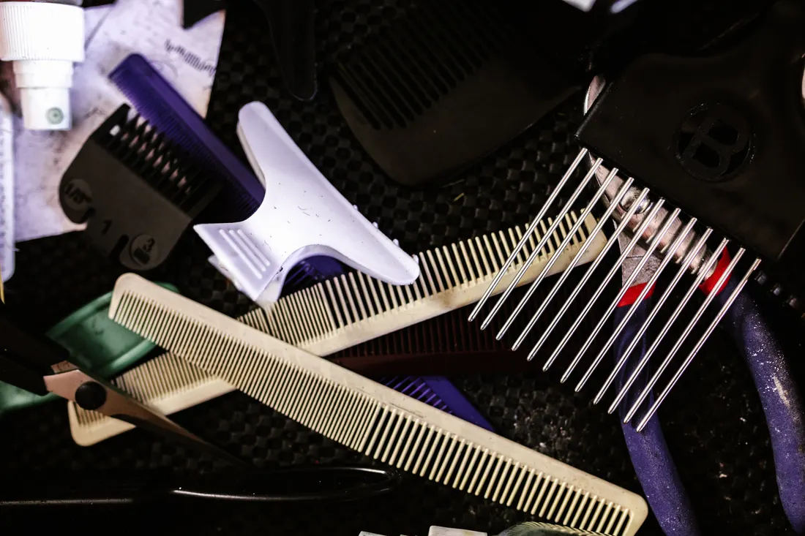
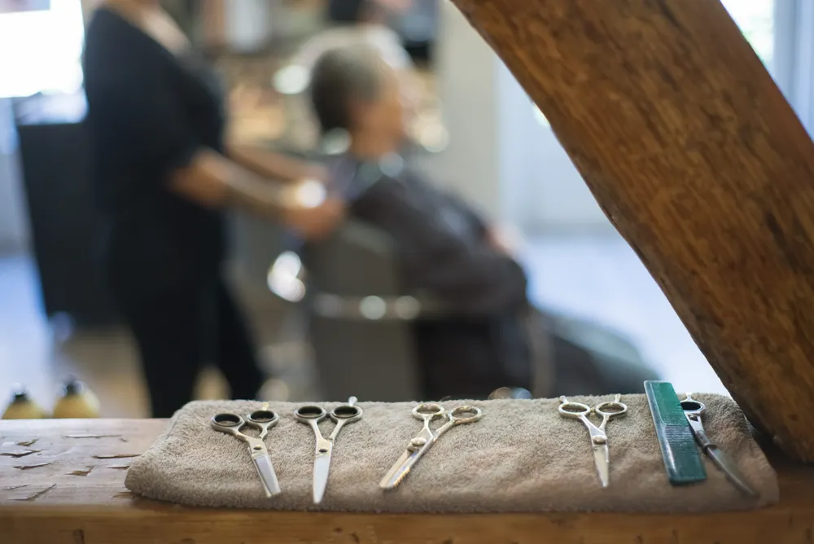
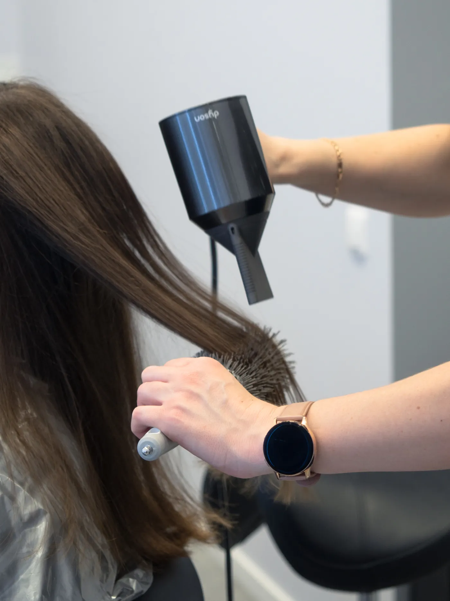

PELUQUERÍA CON NOMBRE PROPIOEL BOSQUE, CÁDIZ
Las Coquetas.
Cabello. Cuidado.
Un punto coqueto.

01 — LAS COQUETAS
Coqueta es una
forma de ser.
Una peluquería en El Bosque.
Un pequeño gesto de cuidado en tu día.
02 — UNA MIRADA AL OFICIO
El detalle
lo dice todo.
Herramientas, movimiento y textura.
Un relato en imágenes.


El oficio,
en primer plano.
Fotografías ilustrativas del universo de la peluquería. No muestran el local ni trabajos de Las Coquetas, ni constituyen un catálogo de servicios.
03 — NOS VEMOS EN EL BOSQUE
En la Rosa,
en El Bosque.
Calle la Rosa, 35. Guarda la dirección.
LAS COQUETAS
Calle la Rosa, 3511670 El Bosque, Cádiz, EspañaAbrir en Google Maps (nueva pestaña)
TU RUTA EMPIEZA AQUÍ